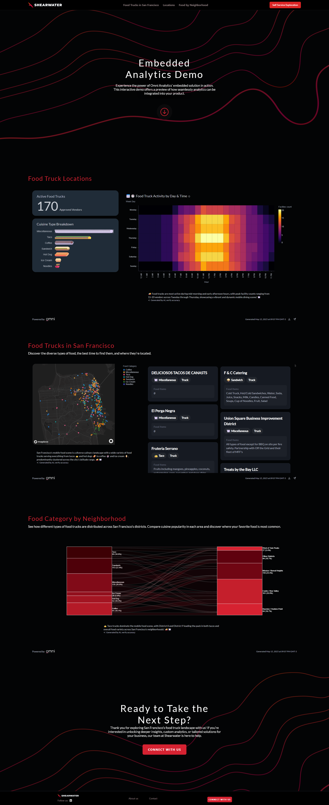

Embedded Analytics Demo for Omni Platform
Project Overview
A collaborative initiative with Shearwater, Omni (San Francisco), and Cluster (Brazil) to create a comprehensive prototype that demonstrates Omni's embedded analytics capabilities. As the lead on this project, I was responsible for multiple aspects of development and implementation.
Key Responsibilities
- Led the discovery phase to understand client requirements and technical constraints
- Created interactive prototypes to visualize the embedded analytics solution
- Designed and implemented data visualizations that effectively communicate insights
- Developed front-end components to seamlessly integrate analytics into the platform


Technical Details
The project leveraged modern web technologies and best practices in embedded analytics to create an intuitive and powerful data visualization solution. The implementation focused on seamless integration, performance optimization, and user experience.